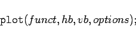

Inhalt Index DeskTop Bronstein

 Computeralgebrasysteme Graphik in Computeralgebrasystemen Graphik mit Maple Zweidimensionale Graphik
Computeralgebrasysteme Graphik in Computeralgebrasystemen Graphik mit Maple Zweidimensionale Graphik


Der zweidimensionale Plot-Befehl hat die prinzipielle Struktur
|  | (20.93) |
Das erste Argument funct kann folgende Bedeutung besitzen:
Das zweite Argument hb ist der Laufbereich der unabhängigen Variablen; er ist in der Form x=a..b einzugeben. Wird kein Argument eingegeben, so nimmt Maple automatisch den Laufbereich -10..10 an. Es ist möglich, einer oder beiden Grenzen den Wert  und/oder
und/oder  zuzuordnen. In diesem Fall wählt Maple eine Darstellung der x-Achse mit
zuzuordnen. In diesem Fall wählt Maple eine Darstellung der x-Achse mit  .
.
Das dritte Argument vb steuert den Darstellungsbereich der abhängigen (vertikalen) Variablen. Auch er ist in der Form y=a..b einzugeben. Wird er fortgelassen, so nimmt Maple die sich aus der Funktionsgleichung ergebenden Werte für den jeweiligen Bereich der unabhängigen Variablen. Dies kann problematisch werden, wenn in diesem Bereich z.B. eine Polstelle liegt. Daher sollte man, wenn nötig, diesen Bereich begrenzen.
Als weitere Argumente können eine oder mehrere Optionen folgen, die in der folgenden Tabelle dargestellt sind.
| Bewirkt die Darstellung einer parametrischen Eingabe in Polarkoordinaten (der erste Parameter ist der Radius, der zweite das Argument). | |
| Legt die minimale Anzahl der generierten Punkte fest (Voreinstellung 49). | |
| Setzt die horizontale Auflösung der Darstellung in pixel (Voreinstellung m=200). | |
| Setzt die Anzahl der Skalenstriche auf der x-Achse | |
| Veranlaßt die Verbindung mit kubischer Spline-Interpolation (Voreinstellung). | |
| Veranlaßt lineare Interpolation. | |
| Zeichnet nur die Punkte. | |
| Setzt den Titel für die Graphik, T muß ein String sein. |
Zur Darstellung mehrerer Funktionen durch Maple in einer Graphik werden diese in der Regel in verschiedenen Farben oder in unterschiedlicher Linienstruktur erzeugt.
Die auf der graphischen Oberfläche laufenden Versionen von Maple bieten die Möglichkeit, direkt an der Graphik über entsprechende Menüs Veränderungen wie z.B. das Verhältnis von horizontaler zu vertikaler Abmessung, die Rahmung des Bildes, Änderung der Linienstärke usw. vorzunehmen.